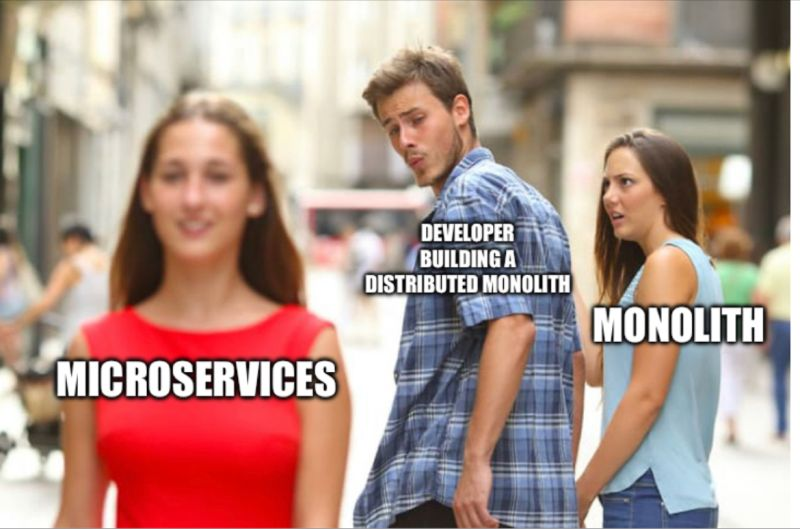
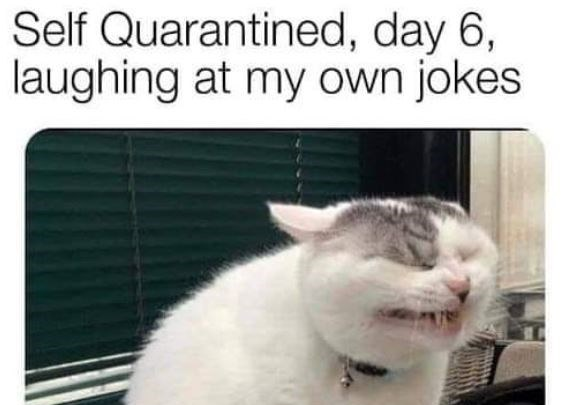

Los memes actuales reflejan las tendencias y los temas de actualidad que están en boca de todos. Se difunden rápidamente a través de las redes sociales y se convierten en parte de la cultura en línea.
Entre los memes más populares en la actualidad se encuentran "Distracted Boyfriend", "Is This a Pigeon?", y "What Do You Meme?"
La pandemia de COVID-19 ha generado una gran cantidad de memes relacionados con el distanciamiento social, el uso de mascarillas y otras medidas preventivas. Estos memes reflejan el humor y la creatividad de las personas en tiempos difíciles.
Algunos memes populares relacionados con la pandemia son "Quarantine Cat", "Zoom Meetings", y "Mask Tan Lines".
Los memes continúan siendo una forma importante de expresión para la generación más joven. Sirven como medio para comentar sobre la cultura pop, la política y otros temas relevantes para los jóvenes.
Los memes relacionados con la cultura joven pueden abordar temas como la ansiedad, la presión social y la vida universitaria.